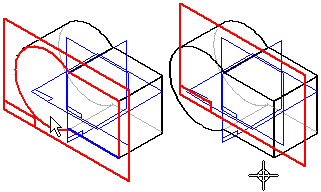
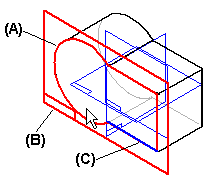
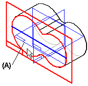
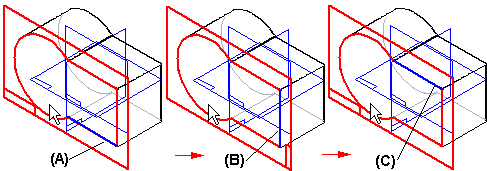
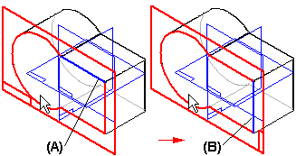
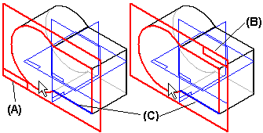
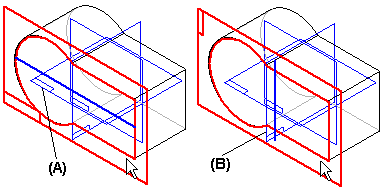
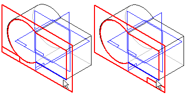

Parallel Plane command
Creates a reference plane parallel to a part face or reference plane at an offset value you define. You can define the offset value using the cursor or by entering a value in the Distance box on the command bar.

While you are creating a new reference plane based on a part face (A), the x-axis orientation (B) of the new reference plane is automatically defined using a linear edge (C) on the part face.

If the face you select does not have any linear edges, the x-axis orientation of the new reference plane is defined using one of the default reference planes (A).

When you create a new reference plane using a part face, you can define a different x-axis orientation using the following hot keys:
-
An upper or lower case N to rotate counterclockwise to the next linear edge (A), (B), (C):

-
An upper or lower case B to go back to the previous linear edge (A), (B):

-
An upper or lower case T to toggle the x-axis orientation (A), (B) to the opposite end of the current linear edge (C):

-
An upper or lower case P to use a base reference plane that intersects with the reference plane you are defining. When you press the P key, the software automatically selects one of the intersecting base reference planes (A). If you want to use a different base reference plane, press the P key again (B). An advantage to this approach is that the x-axis orientation remains constant.

-
An upper or lower case F to flip the normal direction of the reference plane, which changes the x-axis orientation.

How do I
Create a coincident reference planeCreate a Coincident Reference Plane (ordered)
Create a coincident reference plane by axis (ordered modeling)
Create a reference plane by 3 points
Create a reference plane by 3 points (ordered)
Create a reference plane normal to a curve
Create a reference plane normal to a curve (ordered)
Create a tangent reference plane (synchronous)
Create a tangent reference plane (ordered)
Create a parallel reference plane
Create an angled reference plane
Create a perpendicular reference plane
Resize a reference plane
Change reference plane name display
Learn more
Working with reference planesReference planes in assemblies
Examples: Defining reference plane orientation (ordered)
Look up more details
Coincident Plane command (ordered)Coincident Plane command (synchronous)
Coincident Plane command bar
By 3 Points command
By 3 Points command bar
Normal to Curve command
Normal to Curve command bar
Tangent Plane command
Tangent Plane command bar
Parallel Plane command bar
Angled Plane command
Angled Plane command bar
Coincident Plane By Axis command
Coincident Plane By Axis command bar
Perpendicular Plane command
Perpendicular Plane command bar
Create Reference Plane command bar
Edit Reference Plane command bar
Reference plane command bar
Reference Plane Selection command bar
Resize Plane command
Resize Plane command bar
Show All Reference Planes command
Hide All Reference Planes command